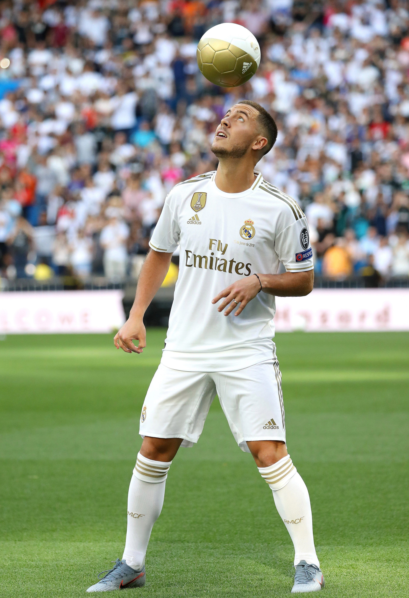

Eden Hazard
The little magician from Belgium

Eden Hazard during his presentation in the Santiago Bernabéu stadium in 2019.
Time line of Eden Hazard's footballing career:
- 1991 - Born in La Louvière, Belgium.
- 1995 - Joined hometown club, Royal Stade Brainois, at the age of 4.
- 2003 - Joined AFC Tubize.
- 2005 - Joined LOSC Lille, where he left his home country of Belgium for the first for France.
- 2007 - Offered first professional contract with the reserve team, Lille B.
- 2008 - Promoted to the senior team. Made senior debut with the Belgium national team.
- 2011 - Ligue 1 Champions with Lille. Named League 1 Player of the Year.
- 2012 - Joined Chelsea FC for a reported fee of £32 million.
- 2013 - Won UEFA Europa League.
- 2014 - Named PFA Young Player of the Year.
- 2015 - Premier League Champions with Chelsea FC. Named PFA Player of the Year.
- 2017 - Premier League Champions with Chelsea FC.
- 2018 - Led the Belgium National Team to a third place finish in the 2018 World Cup.
- 2019 - Won UEFA Europa League as Player of the Season. Joined Real Madrid FC for a reported fee of €100 million.
- 2020 - La Liga Champions with Real Madrid.
Read more about Eden Hazard on his
Wikipedia page.